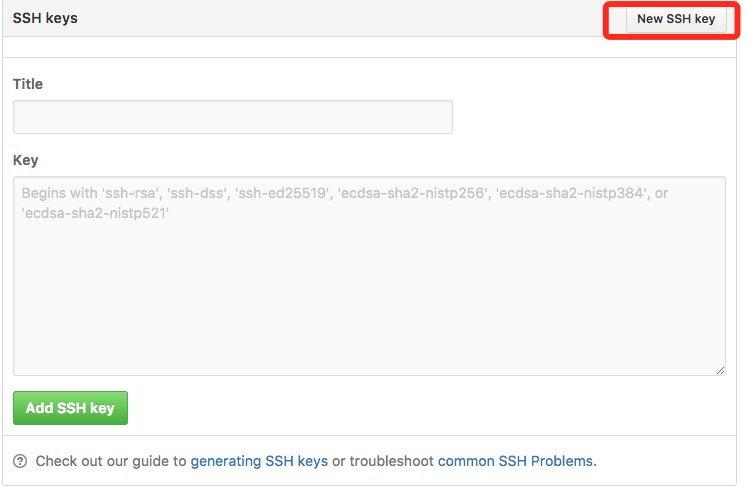
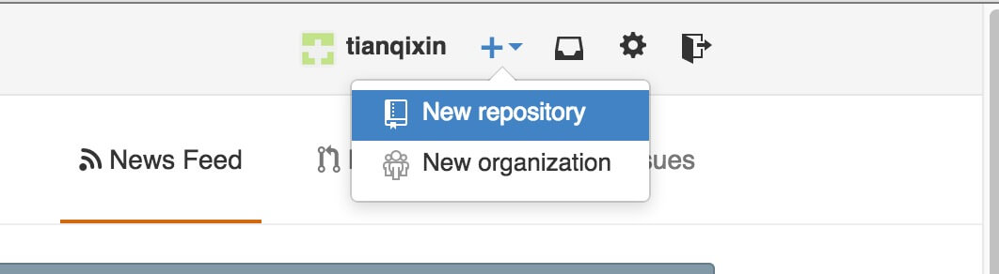

Git remote repository (GitHub)
Git does not have a central server like SVN.
The Git commands we use so far are all executed locally. If you want to share your code through Git or collaborate with other developers, you need to put the data on a server that other developers can connect to.
This example uses GitHub as the remote repository. You can first read ourGitHub Concise Tutorial.

Add remote repository
To add a new remote repository, you can specify a simple name for future reference. The command format is as follows:
git remote add [shortname] [url]
This example uses GitHub as the remote repository. If you don't have GitHub, you can [visit] the official websitehttps://github.com/Register.
Since the transfer between your local Git repository and the GitHub repository is encrypted via SSH, we need to configure authentication information:
Use the following command to generate an SSH key:
$ ssh-keygen -t rsa -C "youremail@example.com"
the followingyour_email@youremail.comChange it to the email you registered on GitHub. After that, it will ask you to confirm the path and enter a password. Here we just use the defaults and press Enter all the way.
If successful, it will be at~/generated under.sshFolder, go in, open.id_rsa.pub, copy the contents insidekey。
$ ssh-keygen -t rsa -C "12345678@qq.com" Generating public/private rsa key pair. Enter file in which to save the key (/Users/tianqixin/.ssh/id_rsa): Enter passphrase (empty for no passphrase): # 直接回车 Enter same passphrase again: # 直接回车 Your identification has been saved in /Users/tianqixin/.ssh/id_rsa. Your public key has been saved in /Users/tianqixin/.ssh/id_rsa.pub. The key fingerprint is: SHA256:MDKVidPTDXIQoJwoqUmI4LBAsg5XByBlrOEzkxrwARI 12345678@qq.com The key's randomart image is: +---[RSA 3072]----+ |E*+.+=**oo | |%Oo+oo=o. . | |%**.o.o. | |OO. o o | |+o+ S | |. | | | | | | | +----[SHA256]-----+
Go back to GitHub, enter Account => Settings (account configuration).

LeftEdgeSelectSSH and GPG keys, then clickNew SSH keyClick the button, set the title in the Title field — you can fill in anything — and paste the key generated on your computer.


After successful addition, the interface is as shown below.

To verify whether it is successful, enter the following command:
$ ssh -T git@github.com The authenticity of host 'github.com (52.74.223.119)' can't be established. RSA key fingerprint is SHA256:nThbg6kXUpJWGl7E1IGOCspRomTxdCARLviKw6E5SY8. Are you sure you want to continue connecting (yes/no/[fingerprint])? yes # 输入 yes Warning: Permanently added 'github.com,52.74.223.119' (RSA) to the list of known hosts. Hi tianqixin! You've successfully authenticated, but GitHub does not provide shell access. # 成功信息
The following command indicates that we have successfully connected to GitHub.
After logging in, click "New repository" as shown below:

After that, fill in "runoob-git-test" (remote repository name) in the Repository name field, keep the other default settings, and click the "Create repository" button. This successfully creates a new Git repository:

After successful creation, the following information is displayed:

The above information tells us that we can clone a new repository from this repository, and we can also push the contents of the local repository to the GitHub repository.
Now, according to GitHub's prompts, run the commands in the local repository:
$ mkdir runoob-git-test # 创建测试目录 $ cd runoob-git-test/ # 进入测试目录 $ echo "# 菜鸟教程 Git 测试" >> README.md # 创建 README.md 文件并写入内容 $ ls # 查看目录下的文件 README $ git init # 初始化 $ git add README.md # 添加文件 $ git commit -m "添加 README.md 文件" # 提交并备注信息 [master (root-commit) 0205aab] 添加 README.md 文件 1 file changed, 1 insertion(+) create mode 100644 README.md # 提交到 Github $ git remote add origin git@github.com:tianqixin/runoob-git-test.git $ git push -u origin master
Please copy the following commands from where you successfully created the new repository on GitHub, rather than using the commands I provided, because our GitHub usernames are different and the repository names are also different.
Next, we return to the repository created on GitHub, and we can see that the files have been uploaded to GitHub:

View the current remote repository.
To see which remote repositories are currently configured, you can use the command:
git remote
Example
$ git remote origin $ git remote -v origin git@github.com:tianqixin/runoob-git-test.git (fetch) origin git@github.com:tianqixin/runoob-git-test.git (push)
When running it with the -v parameter, you can also see the actual link address of each alias.
Fetch the remote repository
Git has two commands used to fetch updates from a remote repository.
1. Download new branches and data from the remote repository:
git fetch
After this command is executed, you need to run git merge to merge the remote branch into your current branch.
2. Fetch data from the remote repository and try to merge it into the current branch:
git merge
This command is executinggit fetchThen immediately executegit mergethe remote branch to any branch you are on.

Suppose you have configured a remote repository and you want to fetch updated data. You can first executegit fetch [alias]Tell Git to fetch data that it has but you don't have yet, and then you can executegit merge [alias]/[branch]to merge any updates on the server (assuming someone pushed to the server at this time) into your current branch.
Next, on GitHub, we click on "README.md" and edit it online:

Then we update and modify locally.
$ git fetch origin remote: Counting objects: 3, done. remote: Compressing objects: 100% (2/2), done. remote: Total 3 (delta 0), reused 0 (delta 0), pack-reused 0 Unpacking objects: 100% (3/3), done. From github.com:tianqixin/runoob-git-test 0205aab..febd8ed master -> origin/master
The above information "0205aab..febd8ed master -> origin/master" indicates that the master branch has been updated. We can use the following command to synchronize the updates to the local repository:
$ git merge origin/master Updating 0205aab..febd8ed Fast-forward README.md | 1 + 1 file changed, 1 insertion(+)
View the README.md file content:
$ cat README.md # 菜鸟教程 Git 测试 ## 第一次修改内容
Push to the remote repository
Command for pushing your new branch and data to a remote repository:
git push [alias] [branch]
The above command pushes your [branch] branch to become the [branch] branch on the [alias] remote repository. An example is as follows.
$ touch runoob-test.txt # 添加文件 $ git add runoob-test.txt $ git commit -m "添加到远程" master 69e702d] 添加到远程 1 file changed, 0 insertions(+), 0 deletions(-) create mode 100644 runoob-test.txt $ git push origin master # 推送到 Github
Return to our GitHub repository, and you can see that the file has been committed:

Delete the remote repository
To delete a remote repository, you can use the command:
git remote rm [别名]
Example
$ git remote -v origin git@github.com:tianqixin/runoob-git-test.git (fetch) origin git@github.com:tianqixin/runoob-git-test.git (push) # 添加仓库 origin2 $ git remote add origin2 git@github.com:tianqixin/runoob-git-test.git $ git remote -v origin git@github.com:tianqixin/runoob-git-test.git (fetch) origin git@github.com:tianqixin/runoob-git-test.git (push) origin2 git@github.com:tianqixin/runoob-git-test.git (fetch) origin2 git@github.com:tianqixin/runoob-git-test.git (push) # 删除仓库 origin2 $ git remote rm origin2 $ git remote -v origin git@github.com:tianqixin/runoob-git-test.git (fetch) origin git@github.com:tianqixin/runoob-git-test.git (push)<div style="display:none;"> <hr> <h2 id="git-coding">Usage CODING 仓library</h2> <blockquote><p>fordeveloperand言 GitHub alreadyNo陌生completed,In平time'sDevelopmentMediumwillCode托管to GitHub ToptenDivide方convenient. However、国insideuser通常willencounteraProblemJustYes： GitHub ofVisitSpeed太Slow。In阿里Cloudand腾讯CloudofHostTop clone Codewhen,ifHostof带宽No够big，clone Code简straightJustYes龟速。常常还willAppear：丢Package、失goconnectionwaitsituation.forThis kind offeelingcondition,ifyou想body验飞速of Git Services，No妨试着useoneBottom <a href='https://studio.dev.tencent.com/' target="_blank" rel="noopener noreferrer">腾讯ClouddeveloperPlatform</a>。relative toGitHub，CODING exceptProvideFreeof Git 仓libraryin addition, alsoGiveI们providesFreeofPrivate repository（FreeofOrdinarywill员Provide 10 itemsprivateProject、512M Git 仓libraryCapacity）. In addition、CODING 还isI们Freeprovides，Project管manage、Task管manage、Team management、File管managewaitfunction,tenDividestrongbig。</p></blockquote> <p>below，IYes试着to create a CODING Project, andwill GitHub TopofCode迁moveto CODING。通常，Divideisthree步：</p> <ul><li>1、Create CODING Project</li><li>2、will GitHub Code Pull tobookground</li><li>3、bookgroundcloseunite CODING 仓library，Push Codeto CODING</li></ul><h3>Create CODING Project：</h3> <p>Log in <a href='https://studio.dev.tencent.com/' target="_blank" rel="noopener noreferrer">腾讯ClouddeveloperPlatform</a> Register账Number, thenInProject管managePageMediumCreate Project，这one步No做赘述，pressyouofrequires填writeProject NameandDescription，Select License Typesufficient，About License ofSelectYesReference这articleArticles：<a target="_blank" href='http://www.ruanyifeng.com/blog/2011/05/how_to_choose_free_software_licenses.html' rel="noopener noreferrer">How to chooseOpen sourceLicense？</a>。ProjectCreate完ChengAmong them,InRight侧Menu BarinCodeOptions卡YesPairCodeenterlinerelatedof管manageandOperation</p><p> <img src='/images/ad/86879978.jpg.html' alt='' /></p><p> <img src='/images/ad/84518452.jpg.html' alt='' /></p> <h3>will GitHub Code Pull tobookground：</h3> <p>Log in GitHub Selectyou想wantImportof仓libraryandCopy仓libraryAddress，InbookgroundExecute commands, then GitHub repositoryCode拉Bottomcome：</p><p> <img src='/images/ad/10346579.jpg.html' alt='' /></p> <pre>sudo git clone</pre> <h3>bookgroundcloseunite CODING 仓library，Push Codeto CODING：</h3><p>首先I们Execute commands：<code>git remote -v</code></p><p> <img src='/images/ad/43989293.jpg.html' alt='' /></p><p> Yes看to,currentof git alreadycloseunitealreadyafarCourse仓Library.</p><p> Therefore,JieBottomcomeI们ExecutewithBottomCommand，comecloseunite CODING farCourse仓library（the following仓libraryAddressrequiresReplace withyouof CODING ProjectofAddress！） No.one条Commandrole ofYesDeletepresentYesof仓librarycloseunite，behindtwo条CommandThenYeswill仓librarycloseuniteto CODING the address of,AlsowillCode Push to master branch</p><pre> sudo git remote rm origin sudo git remote add origin https://git.coding.net/xxx/xxx.git sudo git push -u origin master</pre> <p>after that,I们againenter入 CODING ProjectMediumCode管manageofPage，convenientYes看toI们刚才 Push TopgoofCodealready。Tothis、GitHub TopofProjectalreadyComplete迁movetoalready CODING Platform！</p><p> <img src='/images/ad/18357223.jpg.html' alt='' /></p> <h3>CODING 仓libraryof免Password Push/Pull</h4><p>Code迁moveto CODING after that,I们discover，Each time Push/Pull Codeofwhen候allwillHintI们InputUsernameandPassword。This isbecause，ourProject还noadd SSH Key，只abilityThroughUsername/Passwordverify。 and CODING YesisI们provides公钥verifyway ofof,enter入Project管manage，InLeft侧Options卡MediumClick"公钥Deployment"button,Then ClickRight侧of"New公钥Deployment"</p><p> <img src='/images/ad/62119861.jpg.html' alt='' /></p><p>we willbookgroundof公钥contentPastetocorrespondingPosition, andGive公钥命nameoneBottom（View/GenerateLocal公钥，YesReference这article博text：<a href='/w3cnote/view-ssh-public-key.html' target="_blank" rel="noopener noreferrer">ViewLocal ssh 公钥，Generate公钥</a>）。勾选"授予推sendPermissions"ThenYes授予这台machinedevicePushCodeofPermissions。</p><p> <img src='/images/ad/64498917.jpg.html' alt='' /></p><p>SaveOKSettingsAfter,I们again尝试。At this point,Push/Pull CodeNoInrequiresverifyUsernamePassword。Tothis，ourCodeconvenient完全托管Inalready CODING PlatformTop，享accept他ofconvenient捷and飞速吧！</p><p>For exampleYes疑askpleasequeryread<a href='https://dev.tencent.com/help/doc/cloud-studio' target="_blank" rel="noopener noreferrer">帮助Documentation</a></p> <p>Now CODING correctIn举办one场based on Cloud Studio 工doSpaceof【I最喜loveof Cloud Studio Plugin评选big赛】。enter入EventsOfficial Website：<a href="https://studio.qcloud.coding.net/campaign/favorite-plugins/index" rel="noopener noreferrer" target="_blank">https://studio.qcloud.coding.net/campaign/favorite-plugins/index</a>，Learn moreEventsinformation.</p> </div> other extensions